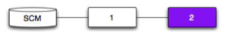
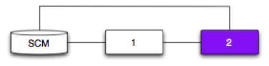
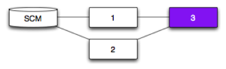

Romit Kala / @romitkala
|
Pipeline 1 depends on an SCM. Pipeline 1 will trigger each time it polls the SCM and detects a new revision. |
|
|  |
Pipeline 2 depends on Pipeline 1. Pipeline 2 will trigger each time Pipeline 1 successfully completes. |
|  |
Pipeline 2 depends on Pipeline 1 and an SCM. Pipeline 2 will only trigger if a new revision has successfully passed through Pipeline 1 |
|
Pipeline 1 and 2 depend on the same SCM. A new revision will trigger both Pipeline 1 and 2. |
|
|  |
Pipelines 1 and 2 depend on an SCM. Pipeline 3 depends on Pipelines 1 and 2. Pipeline 3 will only trigger if a new revision (SCM) has successfully passed through both Pipeline 1 and Pipeline 2. |
|
Pipelines 1 and 2 depend on SCM 1. Pipeline 3 depends on Pipelines 1 and 2, and SCM 2. Pipeline 3 will trigger: if a new revision (SCM 1) has successfully passed through both Pipeline 1 and Pipeline 2 each time it polls SCM 2 and detects a new revision |
|
Pipelines 1 and 2 depend on SCM 1. Pipeline 3 depends on SCM 2. Pipeline 4 depends on Pipelines 1, 2 and 3. Pipeline 4 will trigger: if a new revision (SCM 1) has successfully passed through Pipelines 1 and 2. each time Pipeline 3 successfully completes (SCM 2) |